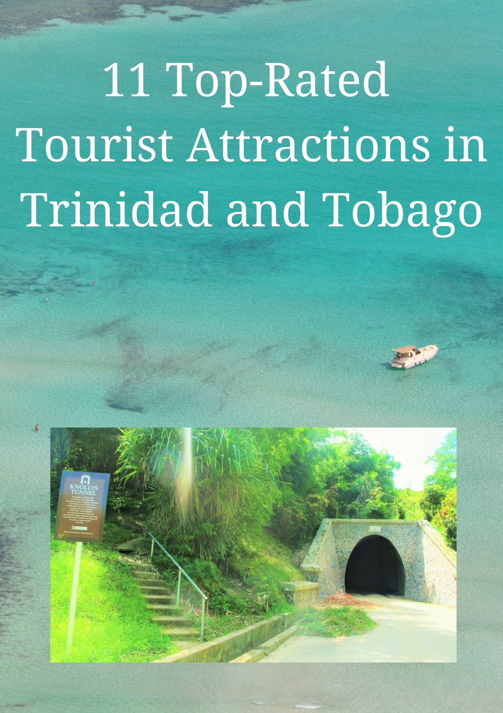

Click the picture below:
| Number | Place |
|---|---|
| 1 | Englishman's Bay |
| 2 | Pigen Point |
| 3 | Nylon Pool |
| 4 | Argyle Falls |
| 5 | Asa Wright Nature Centre |
| 6 | Fort King George |
| 7 | Kelleston Drain |
| 8 | Piparo Mud Volcano |
| 9 | Port of Spain |
| 10 | Temple of the Sea |
Here is some more information about the places mentioned in the table above:
Englishmen’s Bay is one of the most incredible beaches you’ll find anywhere in the Caribbean, not just in Trinidad. Whether you’re a beach lover or not, this secluded bay is a must see. The swaying palms, soft white sand and ultramarine waters are everything you ever thought a Caribbean beach would look like.
Make sure you take your snorkelling gear with you as the crystal-clear waters are perfect for a submarine adventure. When you’ve swam up an appetite grab some eats from one of the local snack outlets.
If you time your visit to Englishman’s Bay right, you may chance upon some majestic leatherback turtles heading for the soft sand to lay their eggs.
Staying with amazing beaches for the time being, Pigeon Point is another sandy must-see. On the southwest coast of the island Pigeon Point is a serene nature reserve which culminates in a postcard-perfect slice of coastline.
The beach at Pigeon Point comes complete with a designated swimming area and lifeguards, so if you’re travelling as a family you won’t need to worry about your little ones getting into trouble in the sea. Rent a deckchair and take the chance to enjoy dinner at one of the local diners near the beach. Everything you need for a perfect day in the sun.
While you’re enjoying the amazing sights & sounds of Pigeon Point you should definitely take the chance to check out Nylon Pool too.
A great place for a swim, the Caribbean Sea fed pool was created by a large sand bar, located just off Pigeon Point. Use the warm three-feet of water to paddle around and find your sea legs. Then why not head out to Buccoo Reef, one of the best places to dive in Trinidad & Tobago
Argyle Falls are a great day out. Have a day away from the beach and see more of the dense rainforest which coats much of Tobago. Exotic birds and butterflies will accompany you on your journey to the thunderous falls.
After the 15-minute hike you’ll be at the base of the 54m drop which the falls cascade down. For the best experience you should definitely try to venture up the levels via the paths and take a swim in the waters.
Get up to the top level and grab some great videos of you swinging into the natural pools from the low hanging forest vines.
If that talk of exotic birds made your heart flutter then the Asa Wright Nature Centre is somewhere you should definitely head for.
Located on the site of a former coffee and cocoa plantation, the Centre is a haven for tropical birds in every wonderous colour you can think of. Walk out with one of the Naturalists and feast your eyes on some of the 150 amazing species which call this land home.
Located in Scarborough the old Fort has been a fixture on the landscape of T&T since it was built by the British in the 18th Century. Take the chance to learn all about the fascinating history of Tobago with a free guided tour of the battlements (although you should probably top the tour guide afterwards).
Another one of the incredible places to dive in Trinidad & Tobago, also known as Little Tobago Drift or Kelleston Deep, the main event at Kelleston Drain is the world’s largest brain coral which sits at the end of the dive route. Go on a journey through the beautiful corals and sponges with hundreds of kaleidoscopic fish for company.
After erupting back in 1997 and encasing the village of Piparo in a layer of concrete-like mud, the volcano now poses no immediate threat. Journey to the village and marvel and the damage caused to the evacuated settlement and you’ll also be able to see the hot mud bubbling through the cracks. A really strange day out.
You can’t do a proper visit to Trinidad & Tobago without taking in the capital. With a whole host of amazing things to do, this Trinidad city will blow you away. Feel free to take a wonder around the boutiques and stop for a bite to eat in one of the delightful restaurants.
After you’ve built up your strength with something to eat you can venture out and check out anything from the Botanical Gardens to one of the city’s museums or maybe something altogether different like Stollmeyer’s Castle.
Created in the image of Balmoral in Scotland back in 1904, this regal building is now government owned a real sight to behold in the city.
We’re finishing with an incredible sight and an even more unbelievable story. the Temple in the Sea is a Hindhu temple, but more than that it is a monument to one man’s tenacity.
After being denied the chance to build a temple on land, Indian labourer Seedas Sadhu started emptying buckets of soil into the sea. Over a 25 year period until he had created enough artificial land on which to build his place of worship.
Sidhu was jailed for his defiance after starting to build the monument in 1947, as he was incarcerated the temple was bulldozed. Upon his release he started again to create the temple in another area of the sea using his bicycle to carry the earth and rock to his makeshift building site. In an incredible about-face from the T&T government they actually started helping him complete the creation in 1994. Now you can go and view the temple in all its glory and there’s even a statue of Sadhu in the car park.